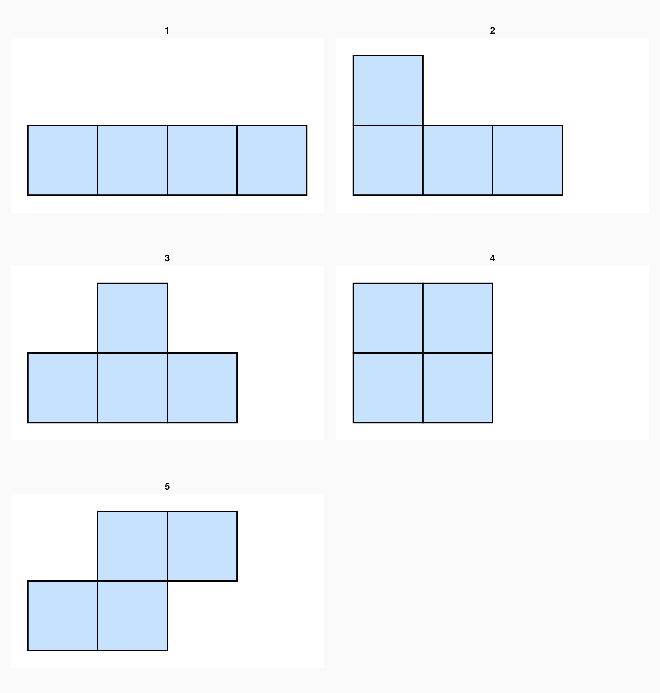
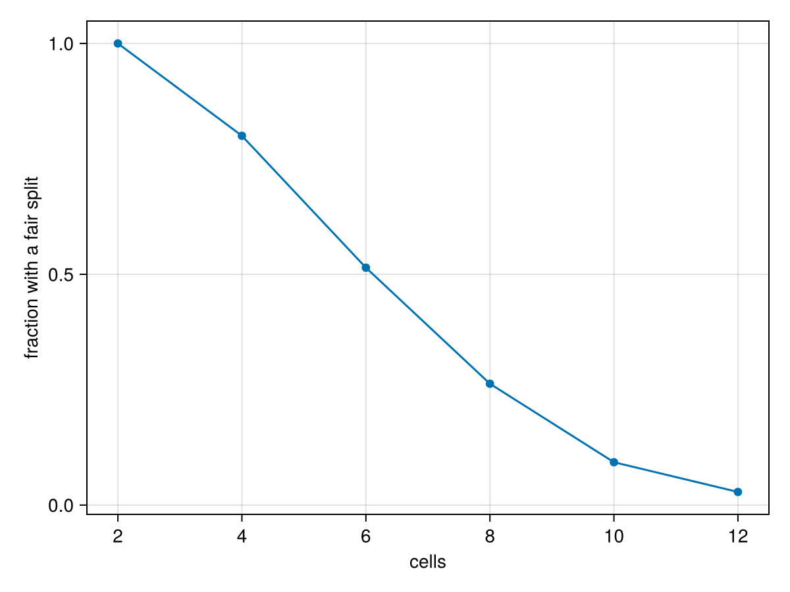

Fair shares
Download this tutorial as a Jupyter notebook or a Julia script.
This tutorial walks through the fraction of polyominoes that can be cut into two pieces of the same shape. This can be done by enumerating all the possible splits and checking if for any of those, the two parts are equal. This is a brute force approach, but reasonably fast for small polyominoes.
A simple example
Let's start with polyominoes with 4 cells. It should be quite obvious that polyominoes with an odd number of cells can't be split into fair shares.
using PolyominoCore
using CairoMakie
poly4 = polyominoes(4; symmetry = :full)
length(poly4)5visualize_polyominoes(poly4; ncols = 2)
Let's implement a function to check if a polyomino has a fair split. We will need the is_equivalent function to take the symmetry into account. With symmetry = :full, a piece and its mirror image count as equal.
using PolyominoCore: is_equivalent
function has_fair_split(p::Polyomino; symmetry = :full)
splits = all_splits(p)
for (a, b) in splits
if is_equivalent(a, b; symmetry = symmetry)
return true
end
end
return false
end
count(has_fair_split, poly4) / length(poly4)0.8Finally we can check how this evolves over different sizes.
function fair_fraction(n; symmetry = :full)
shapes = polyominoes(n; symmetry)
count(p -> has_fair_split(p; symmetry), shapes) / length(shapes)
end
sizes = 2:2:12
fractions = [fair_fraction(n) for n in sizes]6-element Vector{Float64}:
1.0
0.8
0.5142857142857142
0.26287262872628725
0.09280343716433942
0.028427672955974842scatterlines(sizes, fractions;
axis = (xlabel = "cells", ylabel = "fraction with a fair split", xticks = sizes))
This page was generated using Literate.jl.